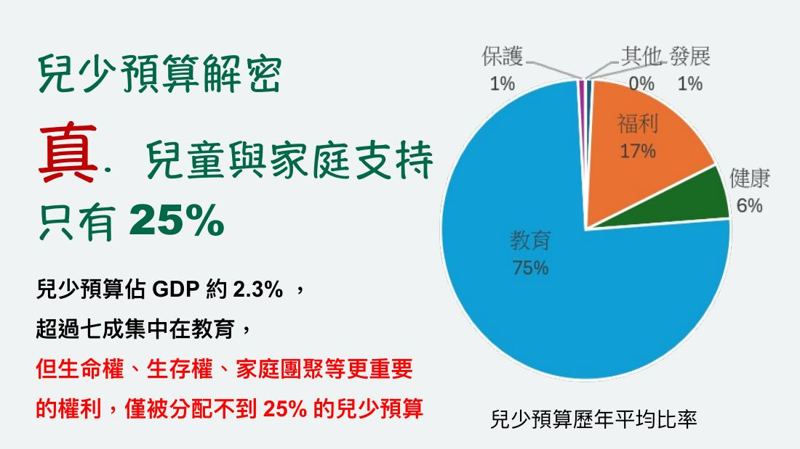
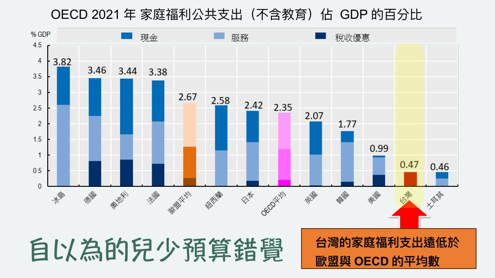
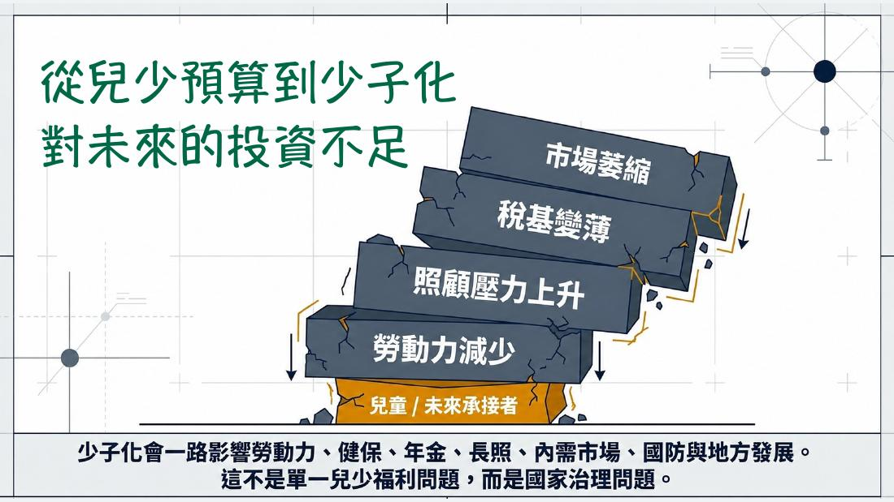
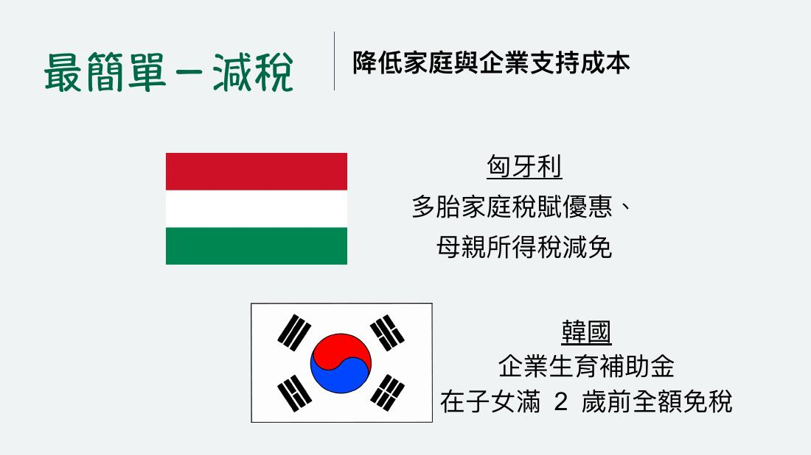
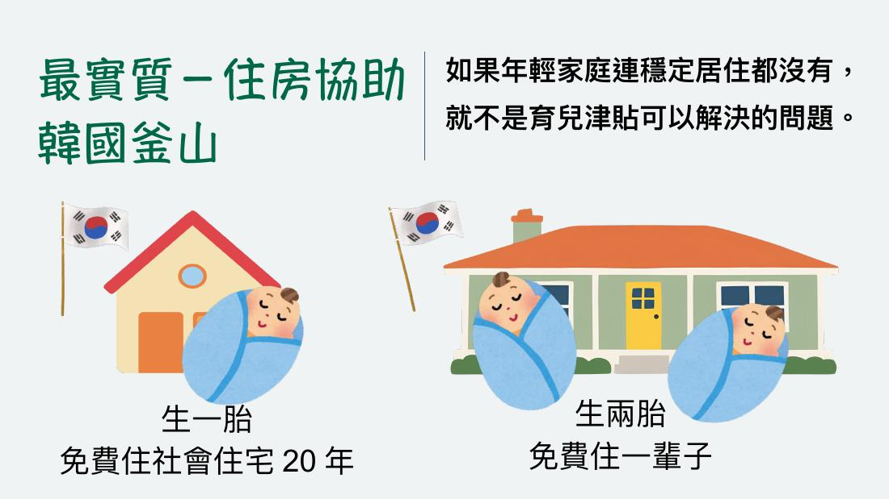
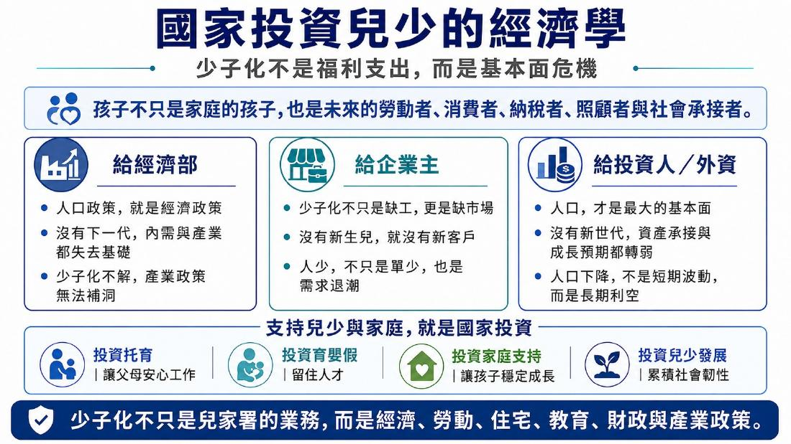
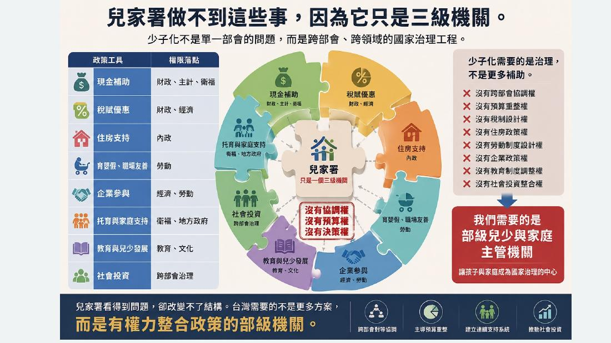

拼圖 03 · 預算 · The Budget Piece
The Budget Piece
預算拼圖轉向投資？
從補助邏輯到永續財政規劃——少子化不能只用「今年補助多少」來回答。
周明湧執行長提醒，少子化不能只用「今年補助多少」來回答。台灣兒少預算占 GDP 約 2.3%，但超過七成集中在教育，真正直接支持兒童與家庭的比重仍不足。
Core Thesis · 核心論述
- 別只問補助多少。少子化不能只用「今年補助多少」來回答。
- 錢多在教育端。兒少預算占 GDP 約 2.3%，但逾七成集中教育，真正直接支持兒童與家庭的比重仍不足。
- 牽一髮動全身。少子化已牽動住房、稅制、職場、托育、教育、年金、長照與國防。
- 從補助到投資。政策必須從「補助邏輯」轉向「社會投資」——在家庭被壓垮以前，把支持放進去。
政策必須從「補助邏輯」轉向「社會投資」——在家庭被壓垮以前，把支持放進去。
周明湧 社團法人中華兒童暨家庭守護者協會 執行長
簡報投影片 · Slides
共 10 張，由講者提供、原樣呈現。點擊任一張可放大檢視。
01
02

03
04
05 06
07
08 09
10
三盟共同呼籲 · 預算相關
呼應本場，三盟主張建立兒少與家庭的預防預算、成效指標與專責人力，把家庭支持納入兒少預防預算，而非只靠短期計畫補助。
→ 回論壇手冊看完整三項行動